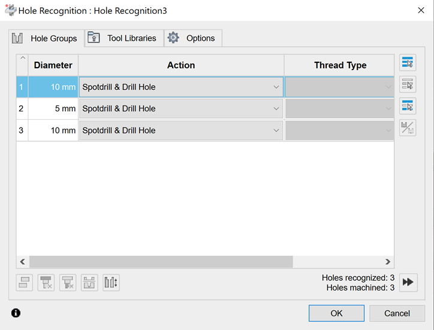
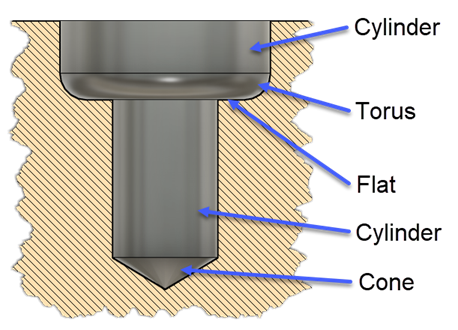
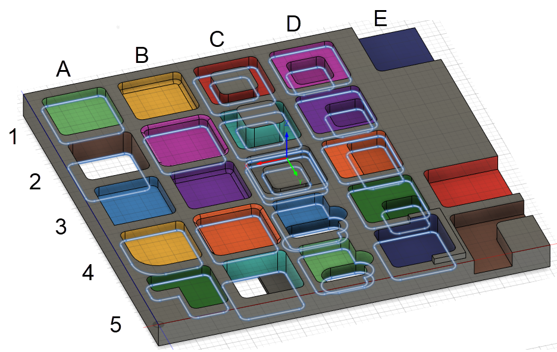
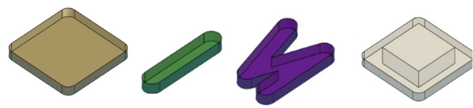

The CAM library supports feature recognition for holes and pockets. This topic describes the concepts needed to understand and use this capability.
The hole recognition option available via the UI lists all recognized holes and hole groups based on the diameter and segment types. You can then apply a given template to the recognized holes or hole groups.

Using the API, you can recognize holes and hole groups using the adsk.cam.RecognizedHole.recognizeHoles(bodies) and adsk.cam.RecognizedHole.recognizeHoleGroups(bodies) methods. They both accept an array of bodies for the input and will return all holes for the body regardless or their orientation. Below is an example of a hole containing all possible segment types. Each segment can be a cylinder, flat face, cone, or torus. A hole signature is the list of segments that define that hole. Two holes are considered the same when they have the same number of segments in the same direction, and each segment must match the geometry of the other segment and have the same dimensions. The segments are in order from the top of the hole to the bottom. The difference between using the recognizeHoles and recognizeHoleGroups is the recongizeHoles method returns a flat list of all the recognized holes. Whereas the recognizeHoleGroups looks at the signatures of the holes found and combines the holes with the same signature into the same RecognizedHoleGroup.

Below is some sample code that finds all the hole groups in the first body of the Design and writes out information to the TEXT COMMAND window about the hole groups and holes that were found. A complete sample illustrates using hole recognition to find holes and create operations using that information. One thing to notice about the sample below is that it doesn't activate the CAM workspace. The hole and pocket recognition capabilities can be used within the Design.
import adsk.core, adsk.fusion, adsk.cam, traceback
_app = adsk.core.Application.get()
_ui = _app.userInterface
def run(context):
try:
# Get the first body in the root component.
des: adsk.fusion.Design = _app.activeDocument.Products.products.itemByProductType('DesignProductType')
body = des.rootComponent.bRepBodies[0]
# Recognize the holes in the body.
holeGroups = adsk.cam.RecognizedHoleGroup.recognizeHoleGroups([body])
_app.log(f"Hole Group count: {holeGroups.count}")
# Print out information about the found holes in the TEXT COMMAND window in Fusion.
holeGroup: adsk.cam.RecognizedHoleGroup
for holeGroup in holeGroups:
# Process each hole within this group.
_app.log(f" Holes in Group count: {holeGroup.count}")
hole: adsk.cam.RecognizedHole
for hole in holeGroup:
_app.log(f" Segments in hole: {hole.segmentCount}")
for i in range(hole.segmentCount):
# Display information about each segment of the current hole.
segment: adsk.cam.RecognizedHoleSegment = hole.segment(i)
_app.log(f' Segment {i}')
if segment.holeSegmentType == adsk.cam.HoleSegmentType.HoleSegmentTypeCone:
_app.log(f' Segment Type: Cone')
elif segment.holeSegmentType == adsk.cam.HoleSegmentType.HoleSegmentTypeFlat:
_app.log(f' Segment Type: Flat')
elif segment.holeSegmentType == adsk.cam.HoleSegmentType.HoleSegmentTypeCylinder:
_app.log(f' Segment Type: Cylinder')
elif segment.holeSegmentType == adsk.cam.HoleSegmentType.HoleSegmentTypeTorus:
_app.log(f' Segment Type: Torus')
except:
_ui.messageBox('Failed:\n{}'.format(traceback.format_exc()))
The API for Fusion exposes the algorithm that makes up the "Pocket Recognition" option available in the Fusion UI as part of geometry selection for the 2D Pocket, 2D Contour, and 2D Chamfer strategies. The functionality is intended to streamline programming for parts that contain many pockets.
In the Fusion user interface, Pocket Recognition allows users to specify a minimum and maximum corner radius and a minimum and maximum depth. Together with the tool direction, this is used to find all the pockets that would be appropriate to machine with a particular tool of specific radius and cutting length, which is the context in which Pocket Recognition is used in the user interface. The API exposes this functionality via the createNewPocketRecognitionSelection method and requires the same inputs as the user interface.
However, the API also exposes much more of the underlying algorithm used in the user interface via the RecognizedPockets object. The API provides a more general and customizable interface that is useful for specific applications. The remainder of this page will only be concerned with this more general functionality. Note that the results from the user interface are deliberately restricted to cases that are relatively certain to generate a toolpath that will be safe (non-gouging). Safety is not considered with what's available through the API, and much more care is required when using this functionality. The returned RecognizedPockets object holds a collection of all the pockets in a given solid model that can be reached from a particular tool direction.
In general, RecognizedPockets can be of these types:
All of the pockets shown in the image below are recognized:

Here are some comments on the pockets above:
Once the pocket recognition has been run on a solid, the following properties of the RecognizedPocket object are available for additional filtering:
No parameter records whether there is a fillet or chamfer at the top of the pocket.
A general approach for using this functionality is to write filtering functions that are applied to the collection of pockets returned for a specific tool direction. The simplest filtering functions could distinguish between several types of pockets, some of which are shown in the picture below:
More complex filters that analyze the properties of the boundary curves could be used to recognize additional pocket types:

Same as with the PocketRecognitionSelection, the associativity is restricted to the entire body. Additionally, the output of RecognizedPockets is new geometry in the form of a Curve3DPath object and not native B-Rep entities since a pocket may be defined by a curve hanging in the middle of a BRepFace (i.e., the orange pocket in the middle row, fourth column). To use the results in operations, you can find the BRepFace or other entity based on a vertex on the Curve3DPath and use it in the PocketRecognitionSelection, which may not work for some pocket types, as seen above.
In the example above showing the various types of pockets that can be recognized, note that the contours in the RecognizedPockets are always planar. For pockets with multiple levels (nested pockets and islands), you can think of horizontal slices through the part that divides the region into areas with a constant depth. The contour is in the plane at the bottom of each slice, and the reported depth is the thickness of the slice. The slices can be easily seen in the UI preview above (although, as already mentioned, the UI does not recognize all of the examples that can be captured in RecognizedPockets. Pockets C1 and C2 (with islands) will be reported as identical pockets, even though the island sticks up farther in C2. C3 is different because the island is lower and generates a second slice.
Fusion Manufacturing typically creates geometry associatively, meaning the manufacturing strategies will update automatically if the underlying CAD model is changed. In the User Interface, this is accomplished by providing parameters (min and max depth, min and max corner radius) that define which pockets to find. If the underlying CAD model changes, the entire computation to find the pockets is done again. There is (for example) no ability for the user to say "Exclude this particular pocket" because there is no reliable mechanism that would allow the algorithm to determine where that pocket is when re-computing. This approach is associative for all practical purposes, but it does impose restrictions.
The RecognizedPockets object in the API also is not associative. The returned contours are new geometry (Curve3DPath) that do not have any relationship to any faces or edges in the model. It can be easily seen in the images above that, in many cases, there is no edge of the original model that corresponds to contour geometry. This is especially true for the complicated interactions in the island and nested pocket cases but it is also an issue for simple pockets that contain fillets or chamfers on the top or bottom edges.
Same as with the PocketRecognitionSelection, the associativity is restricted to the entire body. Additionally, the output of RecognizedPockets is new geometry in the form of transient geometry objects and not native B-Rep entities since a pocket may be defined by a curve hanging in the middle of a BRepFace (i.e., the orange pocket at C4). To use the results in operations, you can find the adjacent BRepFace or other entity based on a vertex using the findBRepUsingPoint method. This technique is demonstrated in the Hole and Pocket Recogition Sample
There are also cases where the model doesn't contain geometry that can be used to create the desired pocket operation. In this case, you can create a sketch based on the geometry returned in the Curve3DPath and use it with the SketchSelection. This approach is also demonstrated in the Hole and Pocket Recogition Sample.